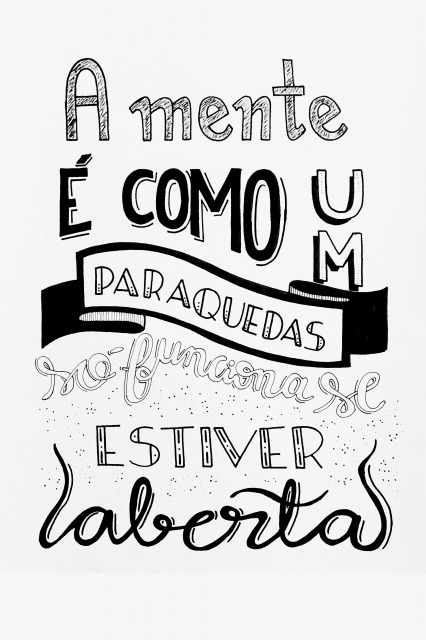
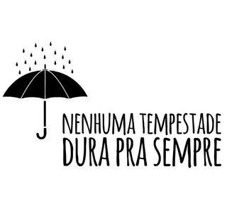

Bullying na escolaO bullying pode acontecer no condomínio, na vizinhança, em grupos ou agremiações esportivas etc., mas o local onde mais acontece esse tipo de crime é na escola. Fatores sociológicos e psicológicos explicam esse fenômeno: é na escola onde os jovens passam grande parte de seu tempo e interagem com um número maior de pessoas.

Também é na escola o lugar onde os reflexos da sociedade fazem com que se crie uma espécie de micro-organismo social, que tende a recriar a sociedade em um espaço menor e isolado. A sociedade em geral é agressiva e excludente, e esses fatores tendem a se repetir entre os jovens no âmbito escolar.
Não pare agora... Tem mais depois da publicidade Na escola, os cruéis padrões de beleza e comportamentos ditados pela sociedade aparecem como normas. Em geral, um grupo dominante reafirma e dita esses padrões dentro do âmbito escolar, fazendo com que se estabeleça uma regra (a normalidade) e tudo aquilo que fuja dessa regra seja considerado como inferior e digno de sofrimento e exclusão.

O grau de popularidade dos que se consideram superiores e a sua maior aceitação pelo grupo fazem com que eles se sintam no direito de tratar mal aqueles que não são populares e não se enquadram no padrão do grupo.Além da intimidação, da perseguição e da violência psicológica, o bullying pode levar à violência física. Os profissionais da educação devem ficar atentos para evitar
os casos de bullying e resolver a situação, conscientizando os agressores e auxiliando as vítimas.